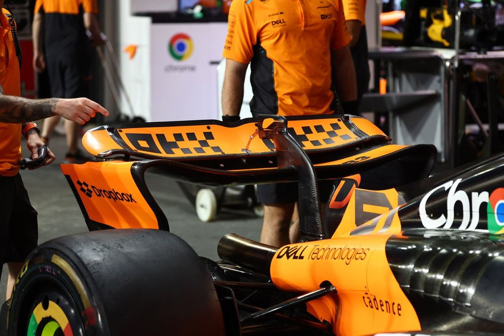

Aerodynamic Analysis of a F1 Rear Wing
Research project (TIPE)

Context
Research project (TIPE) carried out in pair, analyzing the airflow around a Formula 1 rear wing, studying the evolution of drag and downforce as a function of the imposed angle of attack.
Skills Acquired
· CFD simulation setup and parameter sweeping (angle of attack)
· Aerodynamic force analysis (drag and downforce)
· Autonomous research methodology and result interpretation
· Scientific presentation of findings
Software Used
· FluidX3D